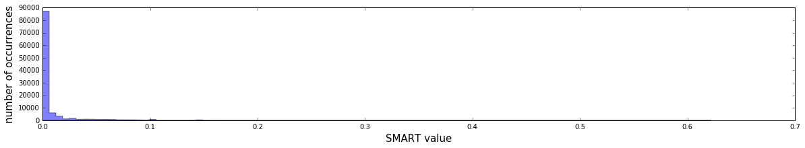
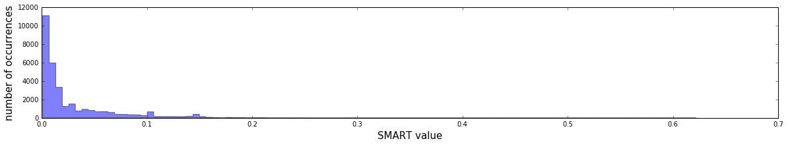
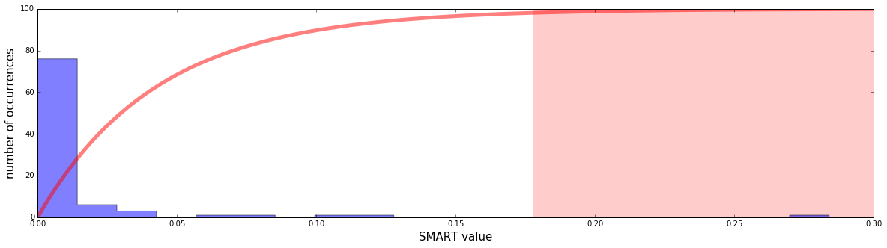

This post was originally published by me at the Fortscale blog.
Fortscale's product helps organizations eliminate insider threats by detecting anomalous user behavior.
In the previous post of this series I described how we at Fortscale use a personalized adaptive threshold for triggering alerts. Each user’s activity is assigned a risk score (known as the SMART value) that triggers a SMART Alert when crosses the user’s threshold. We explained how the more anomalous activities a user performs through time, the higher his threshold gets. This creates the desired effect that the analyst will be notified of a user only when that user performs a truly anomalous activity, even for him.
Moreover, we explained why and how we incorporate the whole organization’s anomalous activity into a user’s threshold so the analyst won’t be bothered by alerts from users who are anomalous, but not anomalous enough compared to other users.
In this post I’ll dive into the technical details of how we’ve implemented the SMART approach. More specifically, I’ll describe the Bayesian inference framework, and will elaborate on how we harnessed it for creating the personalized adaptive user threshold.
Bayesian inference is a method for calculating probabilities. The probability of interest in our case is the probability that a given user will perform an anomalous activity with relatively high SMART value. If we can estimate this probability we will be able to use it in order to assign the appropriate score to each activity.
Let’s take Joe for example. Joe has never performed any drastic anomalous activities. He has generated SMART values mostly in the range of 0.1 to 0.2. Generating a SMART value of 0.6 is very unlikely for him. Let’s say we estimate that the probability of Joe generating a SMART value of 0.6 is as low as 1%. If Joe generates a SMART value of 0.6, we’ll be able to use this probability and give this activity a risk score of 99 (which is 100 minus the probability). We could decide that only risk scores above some threshold (i.e. 95) should trigger an alert. For this post we will assume some pre-configured threshold, but get ready, choosing the right threshold is a difficult task as well. We will describe the methods we use to calculate this threshold in a separate post.
In order to calculate the probability we first need to model our data. Let’s visualize SMART values collected across all the organization users at one of our customers:

Since the majority of the SMART values are zero, which makes sense as most of the time users don’t do anomalous activities, this histogram is hard to interpret... Let’s inspect the same data after discarding all the zeros:

That’s better. Now we can see two patterns in the data:
- High SMART values tend to happen less often than low ones.
- It seems like the frequency decays in an aggressive manner (it decreases faster than linear pace).
Let \(V\) be a random variable representing a SMART value a user might have. A natural model choice would be the exponential distribution (for some \(\lambda\) which is a parameter of the model):
We could have checked that this model has a good goodness-of-fit, but we don’t really have to; we need to remember that our goal is to give high scores to users who perform activities that are extremely anomalous relative to their own behavioral model. We could have chosen other models that can describe the data, e.g., one with an inverse proportional relationship, but in comparison to the exponential model, this would give lower scores for exceptionally high SMART values. We chose the more aggressive exponential model because it better reduces the false positives.
Since we model each user separately, we should investigate and make sure that each user’s data follows the same pattern of more or less exponential decay; and it does.
In order to be able to calculate probabilities for Joe, we first need to estimate his model’s \(\lambda\) from his past SMART values. One frequentist approach would be to use the Maximum Likelihood Estimation (MLE) method in order to estimate \(\lambda\). The problem with this approach is that we get a point estimate: if we had to guess the best \(\lambda\) and we had only one shot, then MLE would probably be our best choice. But we can do better by using other methods which account for uncertainties.
To better illustrate the problem, let’s consider a the simpler and more straightforward problem of estimating how biased a coin is. Let \(p\) be the probability of tossing a HEAD. The goal then becomes to estimate \(p\). If we toss the coin 10 times and 3 of the flips were HEAD, we can estimate \(p\) to be 0.3 using MLE. We obviously have some doubts in this estimation, since there is not enough data; it could be that \(p\) is 0.5, and we got only 3 HEADs due to chance. If we tossed a second coin 1000 times and got 300 HEADs, the MLE would still be 0.3, but our certainty would be greater this time.
There are numerous mathematical approaches we could deploy here in order to account for uncertainties. We chose the Bayesian inference approach. Bayesianism and frequentism are two key approaches used for estimating probabilities, that represent two different philosophical approaches. The Bayesian method treats the model’s parameter as a random variable which means that it can have any value, and there’s a distribution function, called The Prior, that can tell us what values are more likely than others. The frequentist approach on the other hand argues that the model’s parameter is a fixed quantity; there’s nothing random about it, and one can’t state hist prior belief. The Bayesian’s prior will come in handy, so we chose the Bayesian approach.
Let's examine the math. Let \(v\) be some hypothetical SMART value which Joe might generate, and \(Data\) be his past SMART values. We can use some basic probability properties to derive the following:
The equation's steps are
- Use probability marginalization: integrate over all of \(\lambda\)'s possible values.
- Use the chain rule.
- Use the assumption that SMART values are independent of each other, so \(v\) is independant of \(Data\).
- Substitute the probability with the evaluation of the exponential distribution: \(v \sim Exp(\lambda)\).
The only piece of the puzzle missing is how to estimate \(Prob(\lambda | Data)\).
The bayesian inference approach uses Bayes' rule in the following way:
Now we have to calculate the probability of the \(Data\) given \(\lambda\), and the probability of \(\lambda\).
The first part is easy; it is the likelihood function. Since we assume SMART values are independent, we get
The second part is the Prior, which expresses our beliefs about \(\lambda\) before any evidence is taken into account. It turns out that if we choose a specific Prior function, we benefit the nice property where it’s possible to analytically calculate \(Prob(\lambda | Data)\). Implementation wise, it means that we can write it in a nice closed form without the need to do tedious calculations or employ numerical methods in runtime. I won’t bother you with the details, but in the exponential model case, if you choose the Prior to have the Gamma distribution, then \(Prob(\lambda | Data)\) (also known as the Posterior) is also Gamma, with updated parameters. This kind of Prior is known as conjugate prior.
The Gamma distribution has two parameters which control its shape, \(\alpha\) and \(\beta\). Let’s say we choose \(\alpha_{prior}\) and \(\beta_{prior}\) for the prior. These parameters state our belief for the values \(\lambda\) can take. Once we observe some SMART values of the user, we update our Prior belief and get a Posterior which is a Gamma with the parameters \(\alpha_{prior} + N\) (where \(N\) is the number of SMART values) and \(\beta_{prior} + \sum_{v_i \in \{\text{user's SMART values}\}}v_i\).
If we plug it in our calculations of \(Prob(v | Data)\), and after some tedious calculations that we will spare the reader, we get
Since SMART values are continuous, we should not compute \(Prob(V = v | Data)\). Instead, we should calculate \(Prob(V \geq v | Data)\), which is (after integrating)
At this point, we have a nice formula for the probability of seeing a SMART value of at least \(v\). This formula has two inputs: the personal data of the user, and the Prior. The higher the SMART values the user has, the higher the probability of seeing \(v\) gets, which consequently means a lower risk score will be given. Once the user has too many anomalies, the risk score \(v\) triggers is lower than the threshold we set, and an alert won’t be created. We can see the adaptive threshold in action! Nice…
Here’s an example of a concrete user’s past SMART values histogram:

The user had many near zero SMART values, and a few high ones. The highest one is quite exceptional, about 0.28. The red curve is the scoring function (being one minus the aforementioned probability, multiplied by 100). The light red area is the area where scores are greater than 95. In this area alerts will be triggered. We can see that the 0.28 SMART value indeed triggers an alert.
In the next post I will elaborate on how to choose a good prior of \(\alpha_{prior}\) and \(\beta_{prior}\), so stay tuned.
Comments !